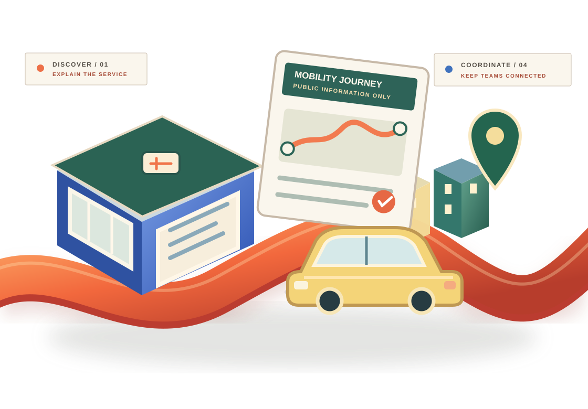

01 / INFORMATION
Useful services.
Hard to navigate.
Prospective partners and customers need accurate, approved service descriptions, operating-area guidance and official information channels.
INDUSTRY 11 / RIDE-HAILING BUSINESSES
Mobility organisations connect people, places and partners. Make approved public service information easier to understand, business enquiries simpler to route and administrative follow-up more coherent.
DISCOVER → UNDERSTAND → ENQUIRE → COORDINATE

CONCEPTUAL ARTWORK / NOT A WORKING RIDE-BOOKING OR DISPATCH SYSTEM
01 / THE EVERYDAY BUSINESS CHALLENGE
Mobility operators, fleet businesses and platform teams juggle public information, commercial enquiries and many partner conversations. Clear communication helps create more consistent business processes.
Prospective partners and customers need accurate, approved service descriptions, operating-area guidance and official information channels.
General corporate, partner and fleet enquiries need the correct business team and consistent response ownership.
Marketing, partnerships and administrative teams benefit from structured non-trip business handovers.
02 / FROM PUBLIC DISCOVERY TO BETTER BUSINESS COORDINATION
Explore a fictional 3D urban information district that illustrates how mobility businesses can connect service descriptions, general enquiries and internal communication. Streets, car sculpture and wayfinding are decorative, not a real ride-hailing platform, GPS map, fare calculator, journey booking, driver dispatch or verified operating area.
Scroll to reveal four concept chapters · Scroll back to reverse · The original keyboard-operable journey controls below can also select a stage.
Show accurate approved public descriptions and general operating-area information with links to official providers, without asserting live trip availability.
DISCOVER / PUBLISHED SERVICE INFORMATIONExplain general corporate, fleet and partnership options without inventing prices, driver earnings, coverage, performance or rider outcomes.
UNDERSTAND / APPROVED BUSINESS OPTIONSIllustrate non-sensitive commercial enquiry routing only, without collecting passenger names, driver identities, trip histories, vehicle records or GPS information.
ENQUIRE / GENERAL BUSINESS CONTACTConnect marketing, partnerships and administrative handovers without operating dispatch, ride matching, live tracking, fleet systems, or payments.
COORDINATE / NON-TRIP BUSINESS HANDOVERS02 / THE CONNECTED BUSINESS JOURNEY
Explore a non-transactional business journey, not a passenger trip. This page does not book rides, dispatch drivers, track locations, calculate real fares, process payments or make driver-safety decisions.
DESTINATIONS / PUBLIC INFORMATION
Present approved public service descriptions and official contact routes without implying live ride availability or operating coverage.
03 / GENERAL BUSINESS SUPPORT
Taamerat360 supports marketing, general partner enquiries and administrative coordination—not driver dispatch, ride matching, trip monitoring, fleet telematics, fare collection or safety certification.
Help people discover approved public service information and business contact routes.
Explore packageOrganise general partnership, corporate and fleet enquiries without handling ride requests.
Explore packageConnect marketing, operations and partnerships around routine non-trip business tasks.
Explore packageConnect service visibility, general business enquiries and administrative follow-through.
Explore package04 / VERIFIED WORK, NOT FICTION
Approved mobility client stories and business outcomes will appear only after verification and permission. We will not invent fleet partners, trip counts, driver earnings, passenger ratings, coverage, safety statistics or testimonials.
Start with your own challenge[Client-verified business challenge, approved approach and substantiated results]
05 / START WITH GENERAL BUSINESS NEEDS
Select three general business needs to prepare a discussion brief. Do not share rider or driver names, phone numbers, precise locations, trip histories, vehicle registrations, identity documents or payment information.
Choose broad business priorities and prepare a brief to copy; no rider or driver details are requested.
Your choices stay in this browser unless you decide to copy them.
06 / BOUNDARIES THAT MATTER
Business communication support is separate from dispatch operations, location tracking, rider or driver records and transportation safety decisions.
No. This is a business-services demonstration. It does not offer ride booking, real-time dispatch, live vehicle locations, dynamic fares or transport service guarantees. Refer to the mobility operator's official services for trip-specific information.
No. The brief uses only predefined organisation-level options. Do not supply ride histories, exact locations, rider or driver identities, phone numbers, vehicle registrations, identity documents, login credentials or payment-card details.
Any dispatch, fleet, payments or identity-related integration would need a separately approved scope, operator authorisation, security and privacy review, technical validation and appropriate transport-regulatory assessment. None is connected here.
RIDE HAILING / THE NEXT CONVERSATION
Start with one mobility-business communication challenge and define practical next steps—without promising ride availability, driver safety outcomes, fare reductions or operational performance.
Discuss a business project